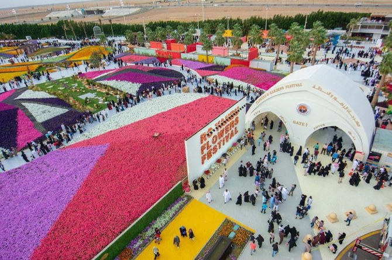

Yanbu Flower Festival
The Yanbu Flower Festival is an annual event that showcases creative floral displays and decorative arrangements. It attracts visitors who are interested in seasonal activities, photography, and family-friendly experiences.
The festival highlights the city’s community spirit and adds a cultural and recreational dimension to Yanbu’s attractions, especially during the event season.
